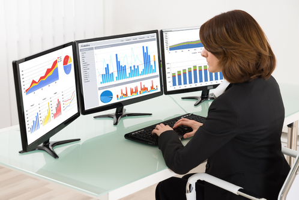
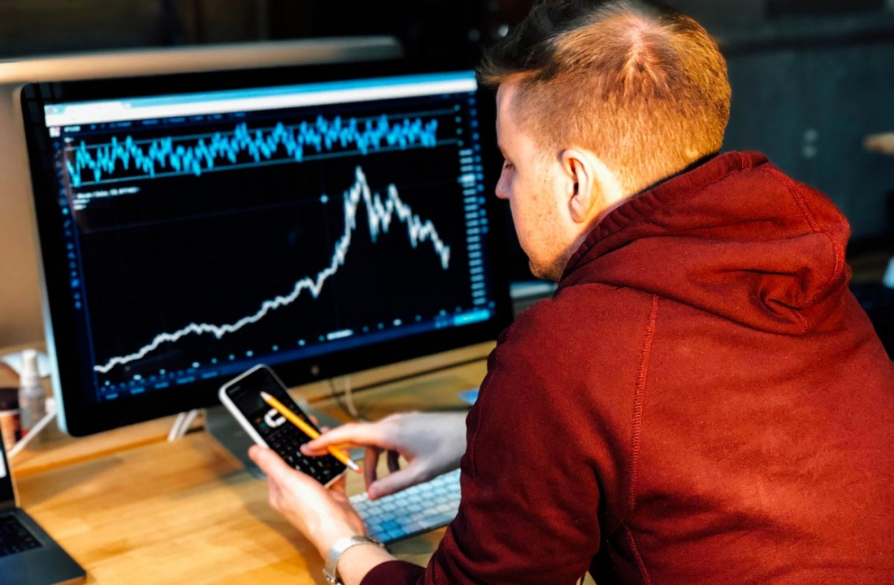
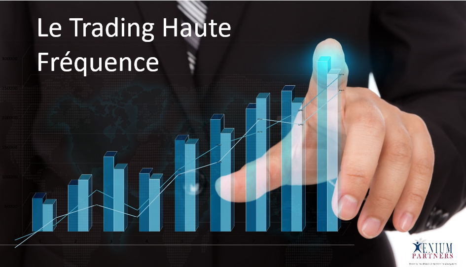

Introduction
Algorithmic trading (aussi appelé automatisé trading, black-box trading, ou Algo-trading) utilise un programme informatique qui suit un ensemble défini d’instructions pour placer une opération. L'algorithme de trading, en théorie, peut générer des profits à une vitesse et une fréquence qui est impossible pour un trader.
Les ensembles de règles définis sont fondés sur le timing, le prix, la quantité ou tout modèle mathématique. Outre les opportunités de profit pour le trader, Algo-trading rend les marchés plus liquides et les transactions plus systématiques en excluant l’impact des émotions humaines sur les activités réalisées par les traders.
Principe du trading algorithmique
Une stratégie de trading algorithmique repose sur un modèle mathématique qui prend (ou propose) des décisions de trading à la place d’un opérateur.
Cette technique est née avec la dématérialisation du traitement des ordres d'achat ou de vente, qui a débuté dans les années 80. Aujourd’hui, le câble reliant les serveurs de la bourse de Chicago à ceux du NASDAQ permet d’effectuer un aller/retour en moins de 13 millisecondes. Par ailleurs, on estime que 70 % des transactions boursières américaines font appel au trading algorithmique.
Les programmes les plus récents offrent des stratégies décisionnelles. L’informatique est capable de réagir instantanément à la moindre variation de cours. Les opérations vont si vite qu’un trader n’a plus le temps de réagir.
Les algorithmes de trading sont de préférence utilisés sur des marchés financiers liquides et sur des produits standards tels que les actions, les futures, les devises ou encore les produits de taux.
Les algorithmes de trading en pratique
Afin de mieux expliquer les algorithmes de Trading en pratique, nous allons les définir sous forme d'exemples. Supposons qu’un trader respecte ces simples critères de trading :
- Achetez 50 actions d’une action lorsque sa moyenne mobile des 50 derniers jours dépasse sa moyenne mobile des 200 derniers jours. (Une moyenne mobile est une moyenne des points de données passés qui atténue les fluctuations quotidiennes des prix et identifie ainsi les tendances.)
- Vendre des actions lorsque sa moyenne mobile des 50 derniers jours est inférieure à la moyenne mobile des 200 derniers jours.
- Les opérations de trading sont exécutées aux meilleurs prix possibles.
- L'ordre de placement est instantané et précis (il y a une très forte chance de l'exécuter aux niveaux désirés).
- Les opérations de trading sont plannifiées d'avance afin d'éviter des changements significatifs des prix.
- Réduire les coûts de transactions.
- Des Contrôles automatisés et simultanés sur les conditions du marché.
- Le taux d'erreurs manuelles est réduit lors des opérations de placement.
- L'Algorithmes de trading peuvent être backtestés en utilisant les données historiques et en temps réel disponibles afin d'avoir une idée claire sur la fiabilité et la rentabilité de la stratégie de trading appliquée.
- Réduire les erreurs commmies par les traders à cause des facteurs émotionnels et psychologiques.
- La stratégie de « market-making », qui consiste à intercaler des ordres d’achat passifs et de vente aux meilleures limites en ayant ou non le statut officiel de « market-maker » (« faiseur de marché »).
- La stratégie d’arbitrage, qui joue sur des valeurs liées (actions corrélées, indices et sous-jacents, etc.) ou entre des prix différents pour une même valeur sur divers lieux d’exécution.
- Les paris sur le « retour à la moyenne » d’une valeur en cas d’écart de comportement ou sur la poursuite temporaire d’un écart de tendance, etc.
- Un mauvaise optimisation. Le marché est un système entièrement ouvert avec l'adhésion quantitative et qualitative constamment changeante de ses participants. Ces changements ont un impact sur la croissance du marché, ses fluctuations, sa volatilité et notent sur le taux de changes. Les data scientist et mathématiciens essayent souvent de saisir beaucoup d'entrées non liées et non formatées dans l'AI, qui est une énorme erreur. Un réseau de neurones entrainné, par exemple, pour reconnaître des visages sur des photos, n'est pas convenu pour le trading financier, et vice versa. La statistique des changes montre que 80 % des comptes liés à l'utilisation d'un réseau de neurones sont mis à zéro dans la première année après la création.
- Une absence ou une gestion des risques incorrecte. La survie sur le marché est directement connectée à la capacité de gérer des risques. Seulement la finance experte et la gestion des risques permettent aux commerçants de survivre aux périodes de turbulence. AI est capable de prédire les changements du marché avec l'exactitude de 90 %, peut créer une série de 10 à 100 pertes faisant des accords dans l'ordre. Même en prédisant correctement les changements du taux de changes et les niveaux des prix futurs, il est impossible de déterminer d'une manière précise comment les taux de changes ont varié par rapport aux derniers taux.
- Blackbox: Peu de gens comprennent qu’avec l'apprentissage d'un réseau de neurones, le trader reçoit une boîte noire. Le produit final est une construction fermée avec un algorithme décisionnel incompréhensible même pour le trader. Avec un environnement défavorable et la perte conséquente d’un investissement important, le trader ne sera pas en mesure de localiser avec précision la raison de la perte de la monnaie.
En utilisant ces deux instructions simples, un programme informatique surveillera automatiquement le cours des actions ainsi que les indicateurs de la moyenne mobile et placera les ordres d’achat et de vente lorsque les conditions prédéfinies sont satisfaites. Le trader n’a plus besoin de surveiller les prix et les graphiques ou de passer les commandes manuellement. Un tel systéme utilisant l'intelligence artificielle pour créer des algorithmes de trading le fait automatiquement en identifiant correctement l’opportunité de trading.
Avantages de l'utilisation de l'AI en Trading
Les avantages du trading en utilisant des algorithmes basés sur l'Intelligence Artificielle sont les suivants:
Le trading qui utilise des algorithmes basés sur l'intelligence artificielle fournit une approche plus systématique que le trading traditionnel basé sur l'intuition ou l'instinct du trader.
Les stratégies du trading algorithmiques
Toute stratégie pour le trading algorithmique exige de trouver au moins une opportunité rentable en termes de revenus améliorés ou la réduction des coûts. Les points présentés ci-dessous représentent les stratégies de trading les plus utilisées dans le cas de trading algorithmique basé sur l'intelligence artificielle:
Stratégies qui suivent la tendance
Les stratégies de trading algorithmique les plus communes suivent des tendances dans le mouvement de moyennes, des évasions de chaîne, des mouvements de niveau des prix et des indicateurs techniques. Ceux-ci sont les stratégies les plus faciles et les plus simples de mettre en oeuvre parce que ces stratégies n'impliquent pas de réaliser des prédictions ou des prévisions des prix. Les opérations de trading sont basées sur des tendances, qui sont faciles et directes pour mettre en oeuvre par des algorithmes sans entrer dans la complexité d'analyse. L'utilisation de 50 jours ou 200 jours comme un deadline pour la vente ou l'achat est une stratégie très connue dans le monde du trading.
Opportunités d'arbitrage
Acheter une action à plus bas le prix dans un marché et la vendre simultanément à un prix plus élevé dans un autre marché est une opportunité d'arbitrage ou une génération de profit sans risque. Mettre en place un algorithme pour identifier de telles différences des prix et passer les commandes instantanément permet de générer plus de profit. En outre, la rapidité des algorithmes par rapport à celle des traders permet aussi d'améliorer la réalisation des opérations de placement et de minimiser les erreurs humaines ce qui augmentera par la suite le gain final.
Stratégies à base de modèles Mathématiques
Les modèles mathématiques prouvés, comme la stratégie de trading neutre de delta, permettent de négocier sur une combinaison d'options et la sécurité sous-jacente. (Le Delta neutre est une stratégie de gestion de portefeuille consistant à des positions multiples avec le fait de contrebalancer de deltas positifs et négatifs, un ratio comparant le changement du prix d'un actif au changement correspondant du prix de sa dérivée, pour que le delta global des actifs soit égal à zéro.)
Trading de gamme (retour moyen)
La stratégie de retour moyen est basée sur le concept que les prix hauts et bas d'un actif sont un phénomène provisoire qui retourne liés à leur valeur moyenne périodique. L'identification et la définition d'une gamme de prix et la création d'un algorithme basé sur cela permettent aux traders de faire des placement automatiquement quand le prix d'actif de l'intervalle de sa gamme définie préalablement.
Prix en moyenne de volume pondéré
La stratégie de prix de moyenne pondérée de volume rompt un grand ordre et sort les plus petits morceaux dynamiquement déterminés de l'ordre au marché utilisant des profils de volume historiques spécifiques à stock. Le but est d'exécuter l'ordre près du prix de moyenne pondérée de volume (VWAP).
Les stratégies du trading algorithmiques
Les marchés tiennent une importance significative dans notre société. La prédiction de tendance d'actions dans la Bourse se sert de données historiques pour déterminer le prix de proche avenir d'actions. Cette dernière consiste à fournir une estimation correcte des actions. Souvent, les cours des actions sont sous-évalués ou surévalués et ceci correspond à une opportunité pour les investisseurs à saisir pour faire plus d'argent. Ceci peut être un exemple d'agents intelligents et des techniques d'évaluation de la croissance du marché et de ses tendances. Le temps joue un rôle important dans la valorisation d'une action. Ceci a significativement changé avec l'apparition d'Intelligence artificielle. Avec la croissance soudaine d'Intelligence artificielle, le temps pris pour l'estimation correcte d'actions a diminué significativement.
L'intelligence artificielle pour le commerce est la trace(piste) de carrière la plus chaude récemment, bien qu'il ait été utilisé dans des marchés boursiers pour plus d'une décennie maintenant. Beaucoup de personnes trouvent ce champ(domaine) extrêmement séduisant, mais l'afflux a été limité. Ceci pourrait être parce que pas beaucoup de personnes sont conscientes(sont au courant) de ce qu'AI dans le commerce de œuvres(travaux). Quelles compétences il faut se développer pour conquérir ce jeu du marché boursier.
AI pour le commerce fournit une maison pour les individus qui sont intrigués par le monde de modèles financiers et l'amour croquant les grandes quantités(montants) de données. Des compétences de commerce quantitatives sont très cruciales dans commençant avec AI dans le commerce. Ceci se réfère à la mécanique(aux mécaniciens) apprenante du marché et comment produire des signaux avec des données de stock(d'actions). Le champ(domaine) exige qu'ils sachent(connaissent) l'extraction de données, l'analyse et des systèmes de commerce automatisés. En programmant des compétences dans des langues comme C ++, Java, on recommande extrêmement le Python et Perl.
L'apprentissage du workflow quant pour la méthode de génération de signal est généralement utilisé dans le commerce. Vous apprendrez de l'optimisation de portefeuille et des sécurités financières formées par des actions(stocks), y compris des indices du marché, la vanille ETFs et ETFS Bêta Intelligent(Chic).En avancant à un pas(une étape) plus avancé(promu), le Traitement automatique des langues est une technique d'apprentissage automatique commune et largement utilisée trouve aussi son utilisation dans le monde de stock(d'actions). Peu de champs(domaines) importants d'utilisation dans le commerce d'algo peuvent être :
Exemple d'utilisation de l'AI en Trading
Le Trading Haute Fréquence
Le trading à haute fréquence (THF) est une technique permettant de réaliser des transactions boursières à grande vitesse grâce à des algorithmes mathématiques. En Europe, selon l’Autorité des marchés financiers (AMF), 30 à 35 % des transactions sont réalisées avec le THF, et aux États-Unis, cette proportion atteindrait 50 à 60 % des transactions. Selon ses détracteurs, le THF, qui fonctionne sur la base de transactions automatisées, a notamment pour effet d’amplifier les effets d’un krach boursier, comme ce fut le cas en 2007-2008.
Mode de fonctionnement de THF
Le principe du THF est d’utiliser des algorithmes mathématiques et une informatique extrêmement puissante pour détecter et exploiter les micromouvements de marché, avec une capacité de réaction réduite à quelques millisecondes. Selon l’AMF, cette technique permet aux investisseurs de mettre en place plusieurs types de stratégies (directionnelles ou non directionnelles).
Parmi les principales, on peut citer :
Europe et trading à haute fréquence
La Commission européenne a publié le 25 avril 2016 son projet de règlement délégué complétant la directive 2014/65 sur les marchés d’instrument financiers (MIF 2). À compter de 2018, les sociétés de trading qui envoient au moins deux « messages » par seconde sur un instrument et une plateforme ou quatre messages sur plusieurs instruments et une plateforme seront considérées comme pratiquant le THF.
Les THF devront conserver leurs algorithmes pendant cinq ans et offrir des informations détaillées sur leurs transactions. Selon certains observateurs, la réglementation européenne est insuffisante pour réguler cette pratique, notamment parce que la Commission a renoncé à s’interroger sur l’utilité de cette technique.
Robot de Trading
Un robot de trading (aussi appelé « Expert Advisor ») est un logiciel dédié à la pratique du trading. C’est un outil automatisé permettant de passer automatiquement des ordres, par exemple sur le marché des options binaires. Programmé pour suivre les instructions ou la stratégie d’un investisseur, le robot trading est opérationnel 24h/24 et 7j/7.
Utilité d'un robot de Trading
Négocier, acheter et vendre des actions à très grande vitesse : un robot trading est destiné à réaliser des arbitrages en se substituant au trader afin d’optimiser ses transactions.
Le plus souvent, le fonctionnement du robot est mimétique : il copie les positions des traders et les reproduit pour le compte d’un autre investisseur grâce à des algorithmes mathématiques.
Les robots de trading peuvent être proposés à leurs clients par des brokers ou bien vendus par des sociétés indépendantes afin d’être intégrés dans des interfaces de trading. Il y en a plusieurs centaines disponibles sur le marché. Les prix varient. Les formules les plus intéressantes sont basées sur un abonnement dont le coût augmente proportionnellement aux gains du trader.
Comment fonctionne un robot de Trading ?
Un logiciel de trading est un programme informatique (algorithme) construit afin de prendre des décisions d’investissements à la place d’un trader. Cet algorithme passe des ordres d’achat et de vente après traitement et synthèse de différents signaux émis par le marché. Le robot est opérationnel 24h/24 et procède à l’analyse des signaux en provenance des places financières en permanence. Les robots de trading les plus performants traitent 7 000 ordres en l’espace de quelques millisecondes.
Pour des raisons de sécurité, la plupart des robots destinés aux particuliers avertissent l’opérateur avant de passer des ordres. Celui-ci est donc libre de suivre (ou pas) les décisions de son EA (Expert Advisor).
Les inconvénients du Trading basé sur l'AI

La figure ci-dessus montre que l’intelligence artificielle, entraîné uniquement pour prédire le résultat final, peut facilement perdre tous les fonds investis pendant la phase d'apprentissage.
Conclusion
Dans cette section, nous avons commencé par définir les algorithmes de Trading. Ensuite, nous avons expliqué le principe du ntrading algorithmes, ses stratégies et son utilisation en pratique. Puis, nous avons listé les avantages et les inconvénients des algorithmes de Tradong qui utilisent l'intelligence artificielle.Enfin, nous avons donné quelques exemples des algorthmes de Trading utilisé dans le marché de la Finance utilisant l'IA.